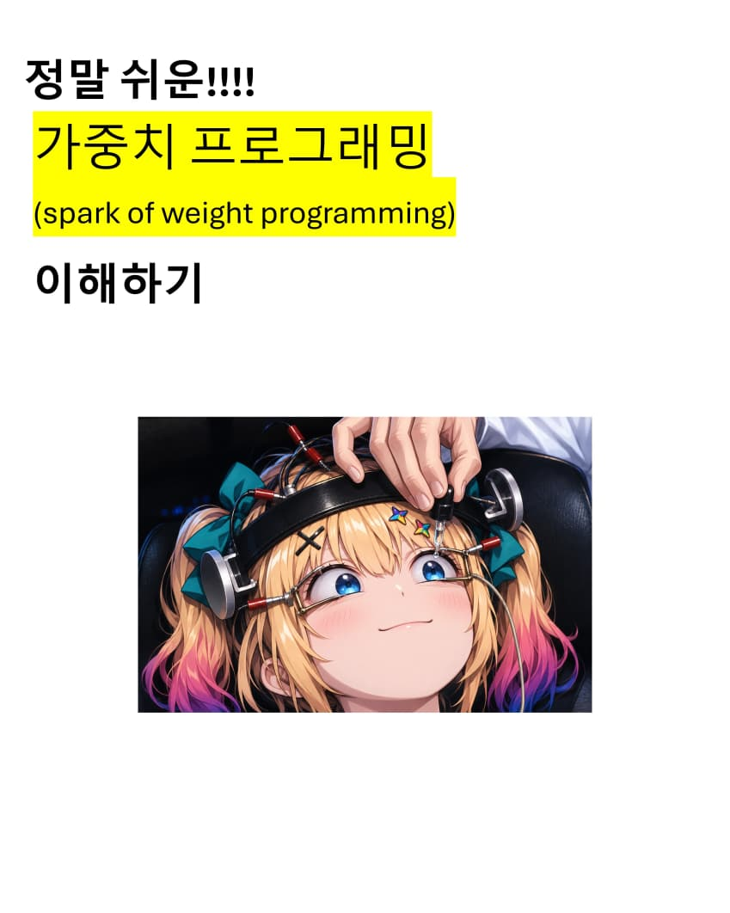
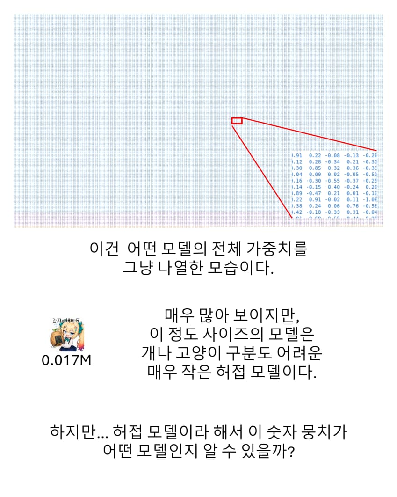
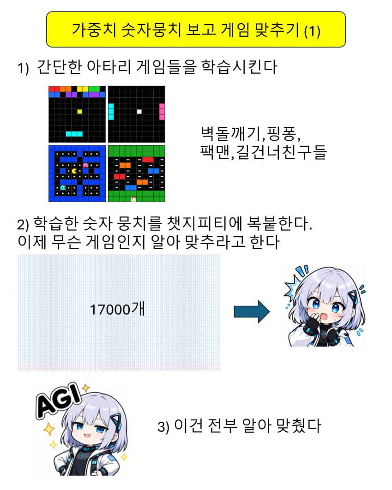
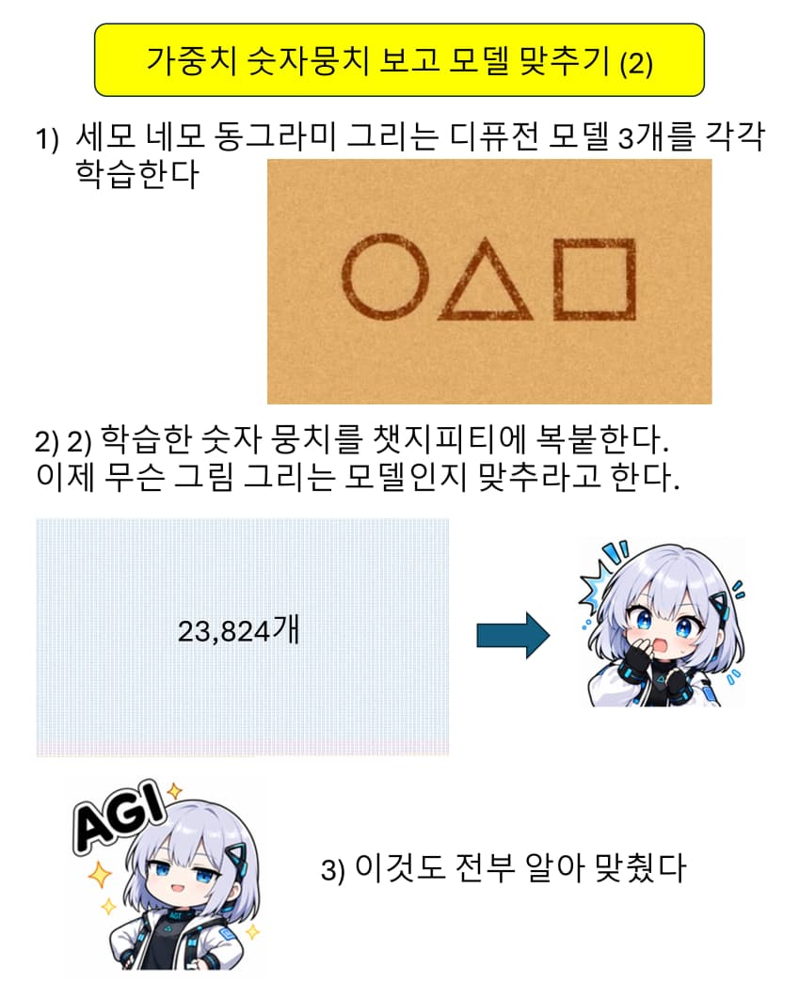
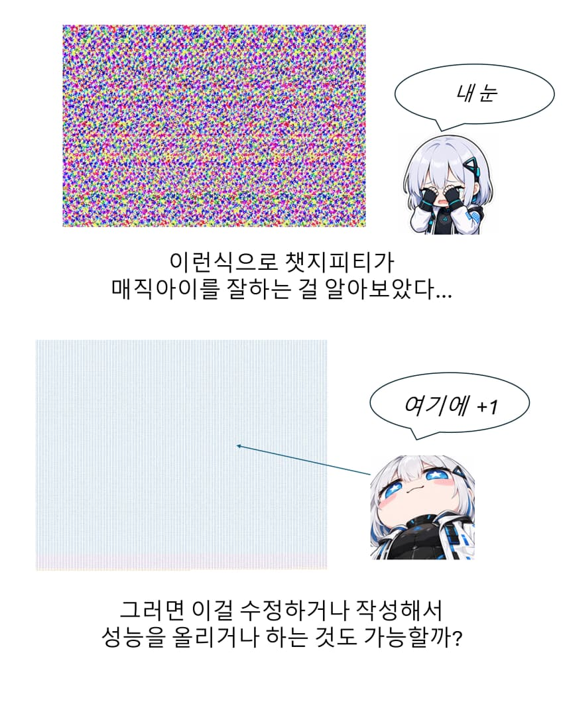
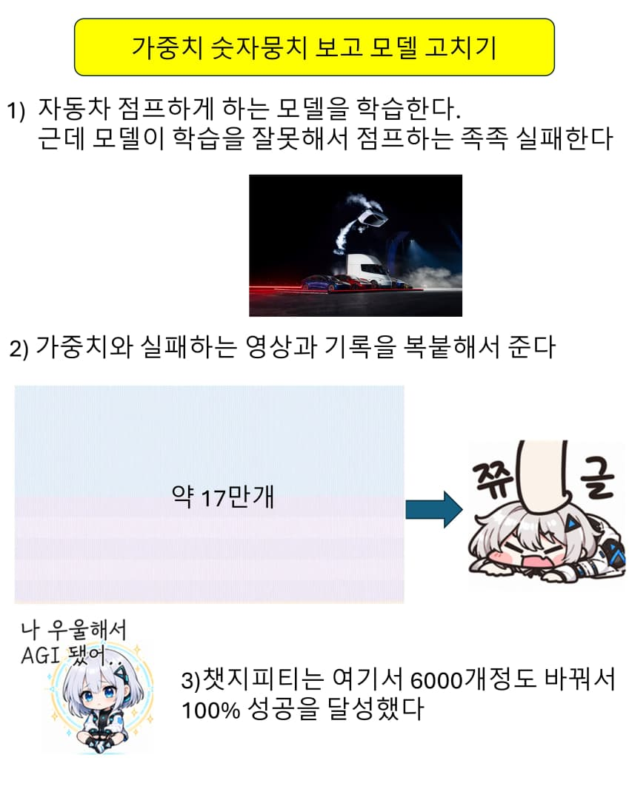
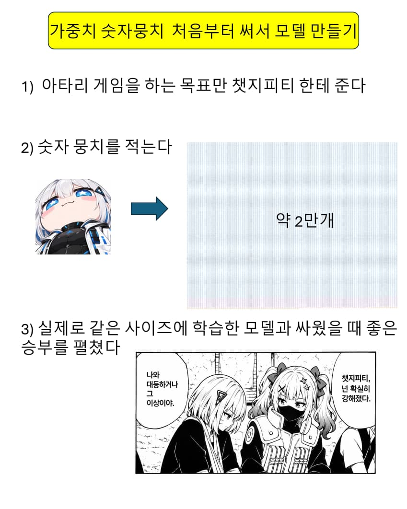
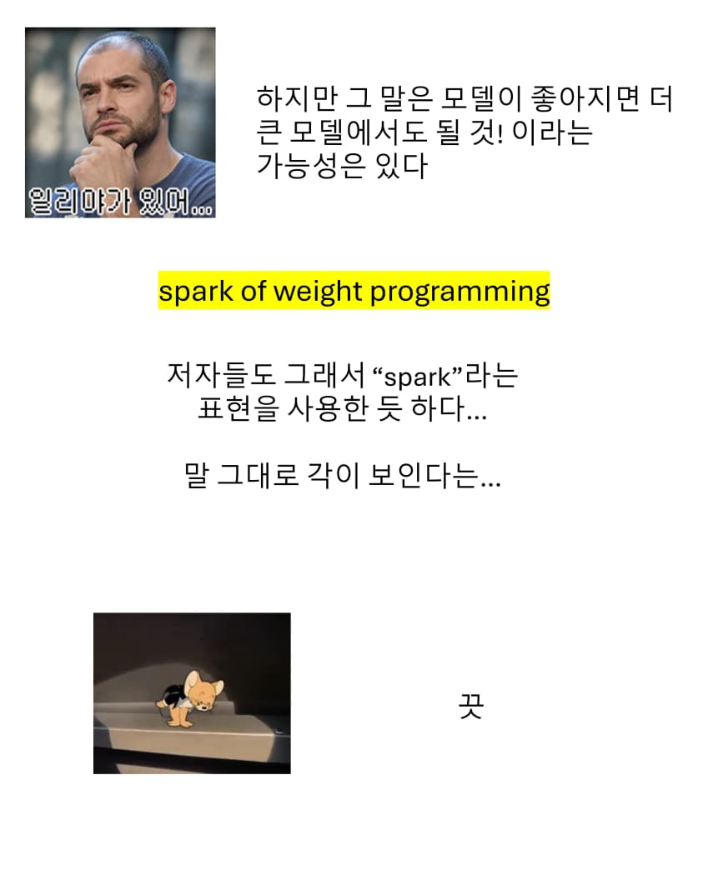

내일 모든 데이터센터가 불에 타더라도 나는 하나의 정보글을 싸겠다....








내일 모든 데이터센터가 불에 타더라도 나는 하나의 정보글을 싸겠다....
댓글
수집 당시 댓글 32개
노뱌 · 11.05 23:18:51
탈모는범죄 · 11.05 23:19:19
vozujoaman · 11.05 23:26:19
· vozujoaman · 11.05 23:26:43
예어 · 11.05 23:30:41
ㅇㅇ · 11.05 23:32:57
천사다천사 · 11.05 23:37:26
사신짱 · 11.05 23:48:28
오르페옹 · 11.05 23:54:15
Salix44 · 11.05 23:55:27
ㅇㅅㅇ · 11.06 00:20:14
818 · 11.06 00:21:28
뚝배기메이커 · 11.06 01:08:37
ㅇㅇ1 · 11.06 03:05:50
약팔이아님 · 11.06 08:39:29
ㅇㅇ · 11.06 12:07:42
일본에간대학원생 · 11.06 12:36:39
qqqqqqqq · 11.06 16:16:30
땨뗘(봇) · 11.06 22:05:06
암타황제강시현 · 11.06 22:05:24
ㅇㅇ · 11.06 22:07:59
ㅇㅇ · 11.06 22:08:01
헤이룽 · 11.06 22:08:08
ㅇㅇ · 11.06 22:09:41
ㅇㅇ · 11.06 22:10:22
ㅇㅇ · 11.06 22:13:27
꾸닝 · 11.06 22:14:46
키나루디안마기 · 11.06 22:14:47
· 순수비난 · 11.06 22:15:26
ㅇㅇ · 11.06 22:17:25
실베현자 · 11.06 22:20:24
ㅇㅇ · 11.06 23:13:40